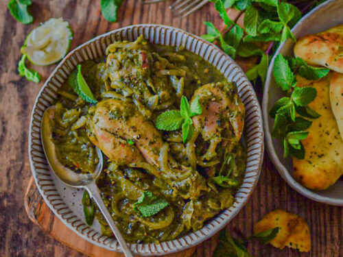

Ingredients
- Chicken: 500 grams, cut into pieces
- Onions: 2 large, finely chopped
- Tomatoes: 2 medium, pureed or finely chopped
- Garlic: 5-6 cloves, minced
- Ginger: 1-inch piece, minced
- Green chilies: 2, slit (optional)
- Yogurt: 1/2 cup
- Water: 1 cup (adjust as needed)
- Cilantro: for garnish, chopped
- Oil: 3 tablespoons
- Turmeric powder: 1/2 teaspoon
- Red chili powder: 1 teaspoon
- Coriander powder: 2 teaspoons
- Cumin powder: 1 teaspoon
- Garam masala: 1 teaspoon
- Salt: to taste
- Bay leaf: 1
- Cinnamon stick: 1-inch piece
- Cloves: 4
- Cardamom pods: 2
- Cumin seeds: 1 teaspoon
Process
- step1:Clean and cut the chicken into pieces.
- step2: Finely chop the onions and puree or finely chop the tomatoes.
- step3:Mince the garlic and ginger.
- step4:Slit the green chilies if using.
- step5:In a bowl, mix the chicken pieces with 1/4 teaspoon turmeric powder, 1/2 teaspoon red chili powder, and salt.
- step6: Set aside for 15-20 minutes.
- step7:Heat oil in a large pan or pot over medium heat.
- step8:If using whole spices, add the bay leaf, cinnamon stick, cloves, cardamom pods, and cumin seeds.
- step9: Sauté for a few seconds until fragrant.
- step10: Add the finely chopped onions and sauté until they turn golden brown.
- step11: Add the minced garlic, ginger, and slit green chilies. Sauté for another 2-3 minutes until fragrant.
- step12:Add the pureed or finely chopped tomatoes.
- step13:Cook until the tomatoes break down and the oil starts to separate from the mixture, about 10 minutes.
- step14: Add the remaining turmeric powder, red chili powder, coriander powder, and cumin powder.
- step15: Sauté for a minute to let the spices bloom.
- step16:Add the marinated chicken pieces. Cook until the chicken is browned on all sides.
- step17: Add the yogurt and mix well. Cook for another 5 minutes, stirring occasionally.
- step18: Pour in 1 cup of water and bring the mixture to a boil.
- step19: Reduce the heat and let it simmer for 20-25 minutes, or until the chicken is cooked through and the gravy thickens.
- step20:Adjust the water quantity as needed to get the desired consistency.
- step21:Add salt to taste and garam masala. Mix well and let the curry simmer for another 2-3 minutes.
- step22: Garnish with chopped cilantro.